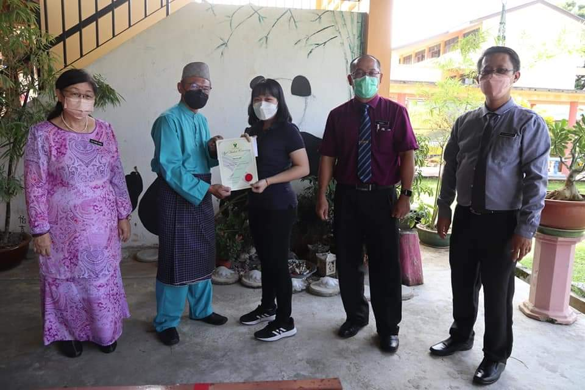
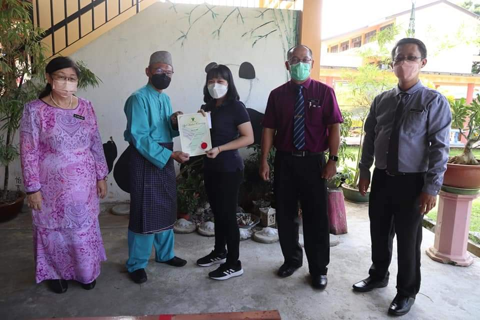

Kuching Town School Band
During my secondary school years from 2014 to 2018, I was an active member of the Kuching Town School Band, playing the clarinet. Throughout this period, I took on several leadership roles, including Assistant Woodwind Leader, Woodwind Leader, and Secretary. My dedication was recognized with the Best Girl Award, which I was honored to receive twice.
I participated in numerous performances, such as the annual school orientation and sports day events, where we welcomed new students and energized the crowd. Additionally, I performed in the yearly Wesak Day parade, contributing to the cultural celebrations. In 2016, I had the privilege of representing our band at the National Youth Day (Hari Belia Negara) celebration, a significant event organized by Malaysia's Ministry of Youth and Sports to honor the contributions of young people to the nation.
Being part of the Kuching Town School Band not only enhanced my musical abilities but also instilled in me valuable lessons in leadership, teamwork, and discipline. These experiences have left an indelible mark on my personal growth and development.
SULAM Project

As part of my bachelor's degree program, I participated in the SULAM project, a compulsory initiative that integrates academic learning with community engagement. I served as the Secretary, managing documentation, coordination, and communication to ensure the project's smooth execution.
Our project was conducted at SMK Wira Penrissen, where we delivered finance-related knowledge to the students. Through interactive sessions and activities, we aimed to enhance their understanding of financial concepts, equipping them with essential skills for managing personal finances and making informed financial decisions.
This experience not only allowed me to apply my academic knowledge in a practical setting but also strengthened my leadership, teamwork, and communication skills. It was a rewarding opportunity to contribute to the community while gaining valuable hands-on experience.
STPM 4.00 CGPA Award
 

In 2020, I proudly completed my Sijil Tinggi Persekolahan Malaysia (STPM) at SMK Pending, attaining a CGPA of 4.00 with A grades in all subjects - Pengajian Am, Bahasa Melayu, Pengajian Perniagaan, and Ekonomi. This achievement reflects my strong analytical, research, and critical thinking skills.
Excelling in this rigorous pre-university program required dedication, resilience, and a deep understanding of business, economics, and language studies. The knowledge and skills gained during this period became a solid foundation for my further studies in finance and business.
Achieving a CGPA of 4.00 in STPM remains one of my proudest academic milestones, reinforcing my commitment to lifelong learning and continuous self-improvement.
Sarawak Energy Scholarship
I was awarded the Sarawak Energy Scholarship in 2023 after successfully passing several assessment stages. This scholarship provided financial support throughout my bachelor's degree studies, allowing me to focus on academic and professional growth.
As a scholar, I had the privilege of attending the Sarawak Energy Scholarship Award Ceremony, where I connected with fellow scholars and industry professionals. This recognition has been instrumental in shaping my academic journey and reinforcing my commitment to excellence in the field of finance and beyond.
Bachelor's Degree Graduation Ceremony

In 2024, I proudly graduated from Universiti Malaysia Sarawak (UNIMAS) with a Bachelor in Finance with Honours, achieving a final CGPA of 3.85. Throughout my academic journey, I consistently excelled in my studies, earning the Dean’s List Award for all six semesters.
My semester-wise GPA progression reflects my dedication and commitment to academic excellence: Semester 1: 3.67, Semester 2: 3.97, Semester 3: 3.79, Semester 4: 3.95, Semester 5: 3.97, and Semester 6: 3.75. Maintaining strong academic performance across all semesters required perseverance, discipline, and a passion for finance.
Graduating with these achievements marks a significant milestone in my academic journey and prepares me for future opportunities in the financial and business sectors.